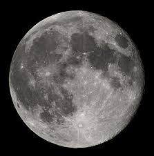

La Luna se aleja de la Tierra aproximadamente 3,8 centímetros cada año. Además, siempre vemos prácticamente la misma cara de la Luna porque su rotación está sincronizada con su órbita alrededor de nuestro planeta.
Regresar a la página principal